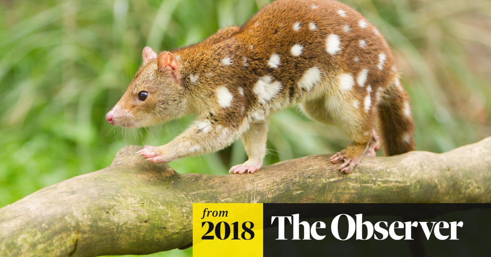

What does it look like?
The northern Quoll has a reddish brown coloured fur with a under bellow as a cream colour. It has white spots on its back and rump with its tail unspotted, with a pointed snout. The northern Quoll is a carnivore and can weigh up to 1.2 kg. The male is normally bigger in size compared to the female. Although they are marsupials, female northern quolls do not have a pouch. At the start of the breeding season the skin around the nipples becomes enlarged and partially surrounded by a pouch like skin partially covering the nipples.
